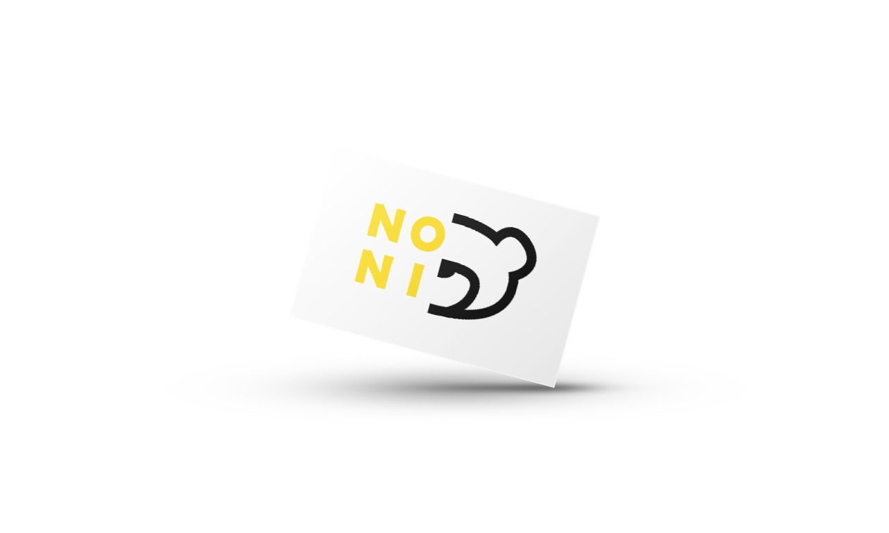
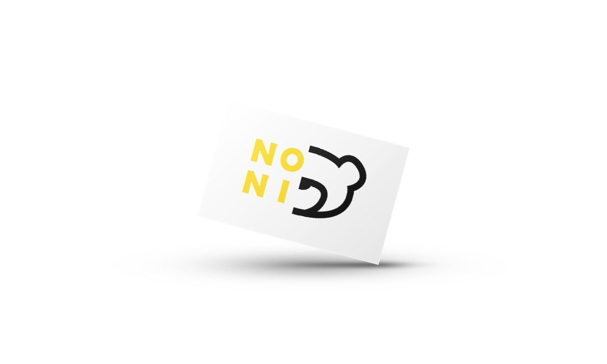

Za dizajn ovog CD-a „Cowboy Carter“ od Beyoncé želeo sam da spojim estetiku američkog zapada sa modernim vizuelnim pristupom. Inspiraciju sam pronašao u simbolima kaubojskog života – teksturama kože, tonovima prašnjavih pejzaža i rustičnim tipografskim rešenjima. Istovremeno, dodao sam savremene grafičke elemente kako bi dizajn zadržao aktuelnost i vizuelnu privlačnost.
Prilikom dizajniranja svoje verzije logotipa za Olimpijske igre u Parizu 2024, želeo sam da spojim modernu estetiku sa simbolikom samog grada i duha olimpizma. Fokusirao sam se na čiste linije i jasne geometrijske oblike, kako bi logo bio prepoznatljiv i lako primenljiv u različitim medijima.
Za dizajn vizuelnog identiteta Noni igraonice koristio sam kombinaciju žute i crne boje kako bih stvorio energičan i privlačan izgled koji odmah privlači pažnju dece i roditelja. Žuta boja simbolizuje zabavu, kreativnost i radost, dok crna dodaje kontrast i moderni, prepoznatljivi izgled. Kombinovanjem ovih elemenata, logo je postao upečatljiv i lako pamtljiv, savršen za brendiranje igraonice.
 

Za dizajn logoa Usnila, brenda posvećenog posteljini i proizvodima za spavanje, inspiraciju sam pronašao u motivu pauna, simbola elegancije i mirnog sna. Kroz stilizovani oblik paunovog pera, logo odražava sofisticiranost i udobnost proizvoda, dok nežne linije i detalji sugerišu spokoj i kvalitetan odmor.
Za dizajn Fox logoa, brenda pametnih satova, inspiraciju sam pronašao u agilnosti i preciznosti lisice. Logo kombinuje minimalistički, geometrijski stil sa modernim linijama, reflektujući tehnološku sofisticiranost i funkcionalnost uređaja. Oštri konturi i elegantna silueta lisice prenose osećaj brzine, inteligencije i pouzdanosti proizvoda.